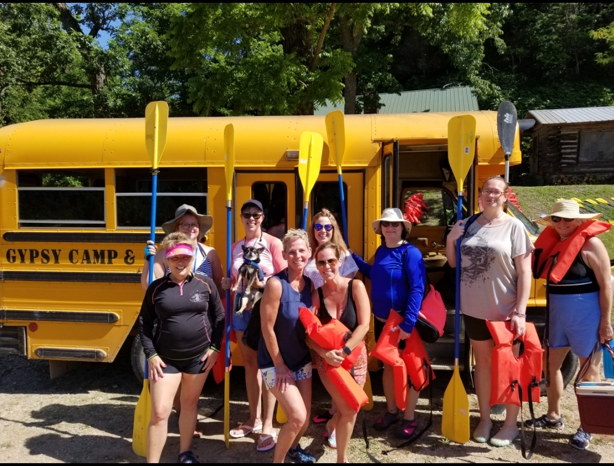
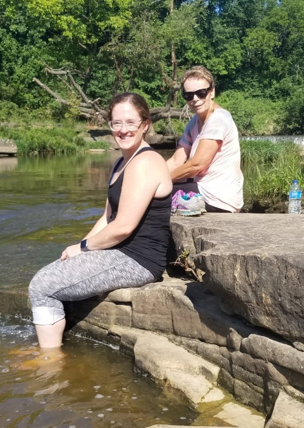
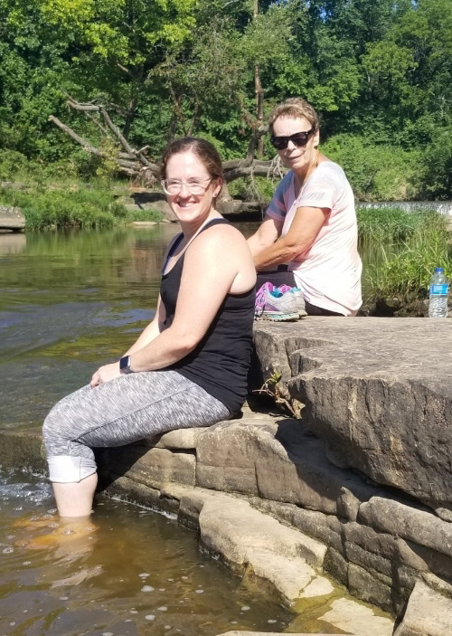
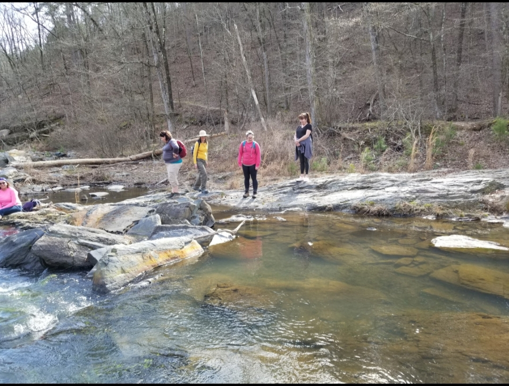
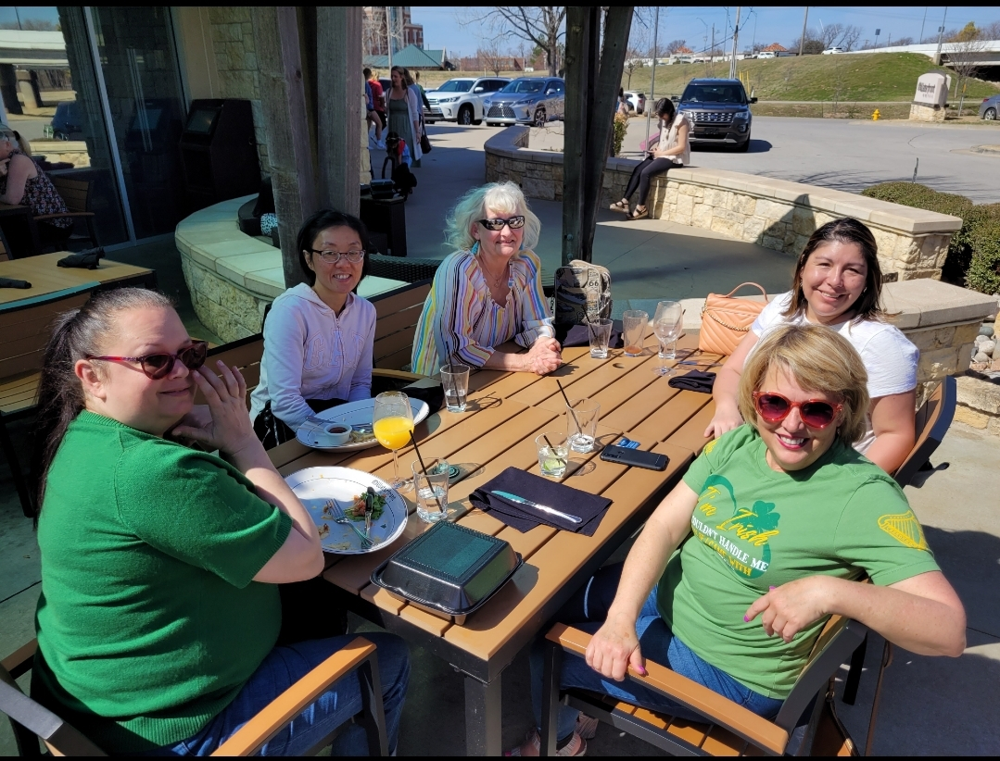
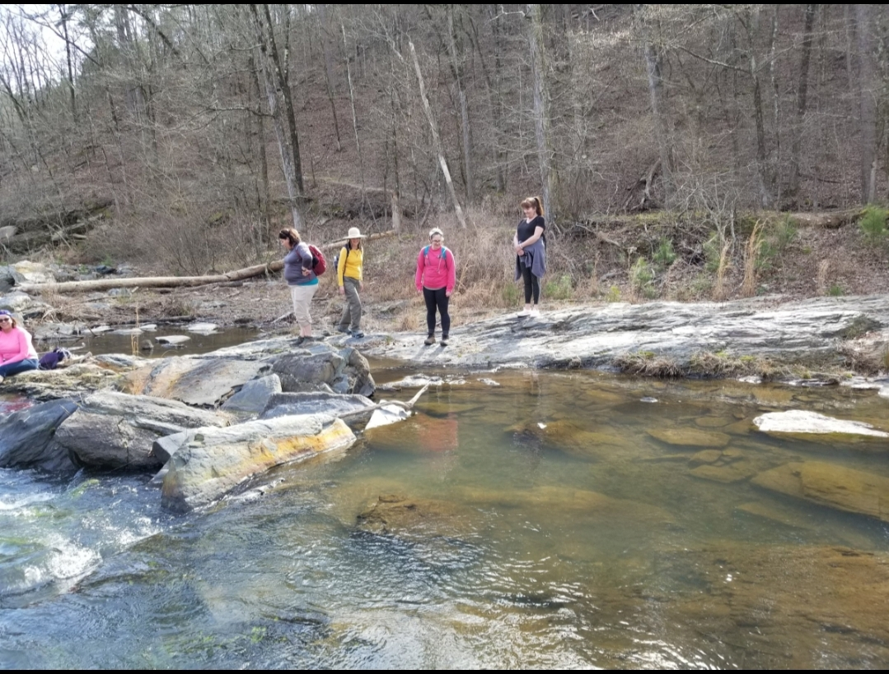
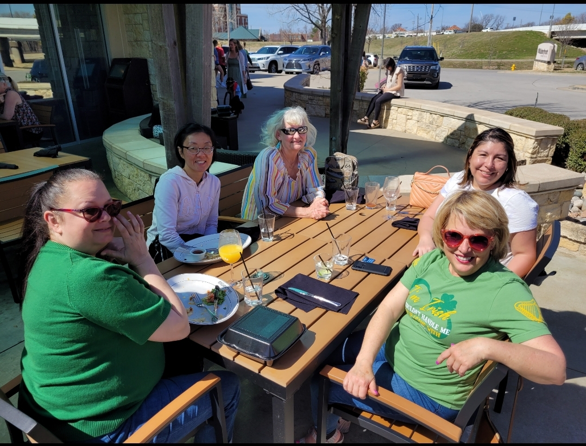

Welcome to Active Women of Tulsa!
While living in Florida, I was lacking friends to do fun events with. The Meetup groups in the area really were lacking opportunities for women. When you attend singles groups, there is the underlying pressure of we are here to date or worse yet there is always that one creepy man who tries to date, everyone. I started my own group but then decided to move back to Oklahoma.
Why we do it
When I arrived here, I was surprised to see a Women's only group called Bold Betties, That is where I met Camile who was looking for women to host events in the local chapter. When that group closed nationally, I decided to create this group which I feel, filled in the gap of what was missing in Tulsa.
I felt like needed a group that supported all women, not just the bold ones but the ones who just wanted to go out to eat and have girlfriend time. What you can expect to find is weekend trips, hiking, shooting guns, and eating out from brunch to dinner. Most importantly, I wanted to create a space where women are not judged, a place to feel comfortable to be themselves without judgment.
Check out our Recent blog posts!
Welcome to Active Women
Welcome to Active Woman of Tulsa! I am so glad you found us. I sincerely hope you try a new activity or rediscover a love of a....Read more here.
Mental Health: AFT to Brainspotting
After I left my second ex-husband in 2000, I was broken. I had two failed marriages in a matter of 4 years. On the surface, I had the fairy tale marriage...Read more here.
What is your number?
Women value who they are and how they should feel by a number. Sounds pretty silly but ask one of your friends, how many steps did you take today.....Read more here.
Past and Present Events
We like to do many different things. Take a preview of some of the things we do and see. Do you want to see past events. We would love for you to come see us on our next event.
 

 


